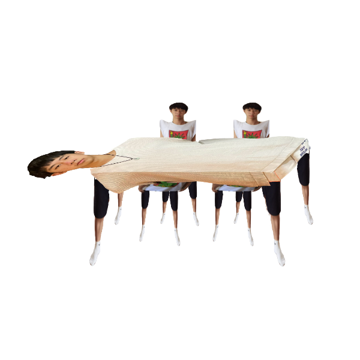

Runbao (Frank) Du
I am a 3rd-year undergrad studying Computational and Applied Mathematics (CAAM) with a minor in Astronomy and Astrophysics at the University of Chicago. My main interest lies in AI applications and the intersections of ethics, security, and music / audio analysis.
I enjoy making music, writing poems, and sometimes typing competitively. I also enjoy bouldering, working out, playing ultimate, and, on rare occasions, running 400m. I love making plans — I make too many plans for everything in my life and they are probably hindering my productivity. I enjoy thinking about big topics and vague problems and pretending to have solutions for them even though I don't even have a solution to the second question on my math homework.
I am always looking for new opportunities.
Email runbao (at) uchicago (dot) edu
CV
Research
LLM Research on Value-based Reasoning ongoing
Working with SUPERGroup to explore value-based reasoning in large language models.
Independent Research on AI-generated Music ongoing
Exploring and characterizing artifacts in AI-generated music. Supervised by the amazing Prof. Blase Ur.
UChicago Directed Reading Program 2025–2026
Learned fundamental concepts in algebraic geometry and applied them to study elliptic curves, using Silverman's The Arithmetic of Elliptic Curves as the main textbook. The ultimate goal is to understand and reproduce the proof of the elliptic curve primality test.
Build
Lyra ongoing
Built and deployed a full-stack AI music platform where users upload a song and chat with an LLM that "listens" through a custom Python audio-analysis pipeline and generates on-the-fly visual scenes via Claude tool-use orchestrating Google's Gemini image model.
Please contact Runbao for the prototype!
Prezuricle — Multimodal Marketing Platform 2023–2024
Co-created with Jason Zhao (USC '27). An AI-driven platform covering multimedia conversions like text-to-speech and text-to-image, with the main services being AI-centric marketing tools.
Music
Album coming Dec 2026.
Whatnot
What keeps me up at night
- Do emotions have a lifespan? Why do some emotions last longer while others last for a split second?
- Will there ever be a perfect debate? Perfect in terms of having absolute consensus upon definitions.
- Will there ever be an absolute, independent thinker who has all their thoughts generated by themselves?
- How do you defeat a man who knows everything, at any time?
- Will there ever be a scenario in which all of mankind stands on the same side of an argument?
- Is there a threshold to the level of impact that forces us to begin weighing the pros and cons?
- Is it possible to explain a very challenging academic topic without using the terms and logic of that field? If so, would anything be lost?
- Is there a threshold that separates what is truly humanly impossible from what is extremely challenging but still achievable?
Animal names I use to plan the sh*t out of everything
I started experimenting with making plans and time management since grade 8 (or maybe 9 — I can't remember). I wrote a book about the planning techniques I used to survive high school, which nobody cared about or read.
I realized that the most important aspect of a good plan is to be flexible and multidirectional. A good plan should incorporate things that you want and don't want to do, but it should be so flexible that you are not restricted. The plan should not be guiding you. You should be guiding the plan.
I tend to use these animal categories with the following rules:
- I should be completing at least 3 animals a day.
- I should be prioritizing these animals at the start of each day so I have a general sense of what's more pressing, but rule 1 still applies.
- Some animals may take longer than the rest, and that's fine.
- Some tasks may fall under multiple animals. That's fine — completing that task counts towards completing multiple animals.
- If a task does not fall under any of these categories, it is not a task.
A table
